Todo análisis empieza con una tabla bien hecha. En este bloque se importa un archivo, se pega una tabla o se abre un ejemplo; se revisa el tipo de cada variable, que decide cómo se analiza; se crean variables calculadas y transformadas; se filtran filas sin borrarlas; se cambia la forma de la tabla y se lee lo que SigmaPro reconoce del diseño del ensayo. Al pie, según lo que tenga la tabla, el bloque sugiere la app de la suite que puede continuar el trabajo. Nada de esto toca el archivo original.
Mientras no hay datos, el bloque muestra su barra de herramientas y, debajo, un recuadro con las tres formas más comunes de empezar. Los botones de la barra hacen lo mismo y siguen a la vista cuando ya hay una tabla cargada.
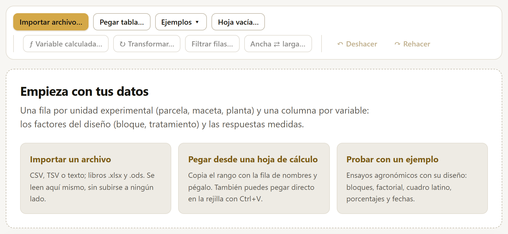
| Botón | Qué hace | Sección |
|---|---|---|
| Importar archivo… | Abre un archivo de texto (CSV, TSV, TXT) o un libro de hoja de cálculo (.xlsx, .xlsm, .ods). El archivo se lee en la computadora; no se sube a ningún lado. | 2.3 |
| Pegar tabla… | Recibe un rango copiado de una hoja de cálculo, con su fila de nombres. | 2.4 |
| Ejemplos ▾ | Abre uno de los 27 ensayos de ejemplo, cada uno pensado para un tipo de análisis. | 2.5 |
| Hoja vacía… | Crea una tabla en blanco con los nombres de columna y el número de filas que se pidan, para capturar a mano. | 2.4 |
Cargar datos nuevos reemplaza la tabla anterior. Si la anterior tenía cambios, el reporte y los análisis abiertos se recalculan con los datos nuevos; por eso conviene guardar el proyecto (capítulo 7) antes de cambiar de ensayo.
SigmaPro lee la forma de tabla que piden casi todos los programas de estadística: una fila por unidad experimental (la parcela, la maceta, la planta, el animal) y una columna por variable. Las columnas son de dos clases: las que describen el diseño (bloque, tratamiento, variedad, dosis, fecha) y las que se midieron (rendimiento, altura, número de frutos).
| bloque | hibrido | dosis | rend |
|---|---|---|---|
| 1 | H-40 | 0 | 4.61 |
| 1 | H-40 | 60 | 5.71 |
| 1 | H-40 | 120 | 6.41 |
| 1 | H-40 | 180 | 6.56 |
| 1 | H-52 | 0 | 4.80 |
| Una fila de nombres, arriba | Nombres cortos, sin repetir: rend, altura_30dds, peso_seco. Los espacios y acentos se admiten, pero los nombres simples se leen mejor en las fórmulas y en el código R. |
| Nada más en la hoja | Sin títulos encima de la tabla, sin totales abajo, sin celdas combinadas ni notas al costado. |
| Los faltantes, vacíos | Una celda vacía es un faltante. También se aceptan NA, . y -, o los códigos que se indiquen al importar. Nunca un cero en lugar de un dato perdido. |
| Un tipo por columna | Una columna de rendimiento con números solamente; si hay un texto suelto («s/d», «perdida»), se toma como faltante y la app lo avisa. |
| Los códigos de grupo, claros | Si el bloque o el tratamiento se escribieron con números (1, 2, 3), revisar que la app los haya tomado como factor (sección 2.7). |
| Forma larga | Si la misma variable se midió varias veces (fechas, años, cosechas), una fila por medición. Si la tabla viene ancha (una columna por fecha), el bloque la convierte (sección 2.11). |
Importar archivo… abre el selector de archivos del sistema. SigmaPro acepta:
Antes de cargar nada, la ventana Importar datos muestra cómo quedará la tabla:
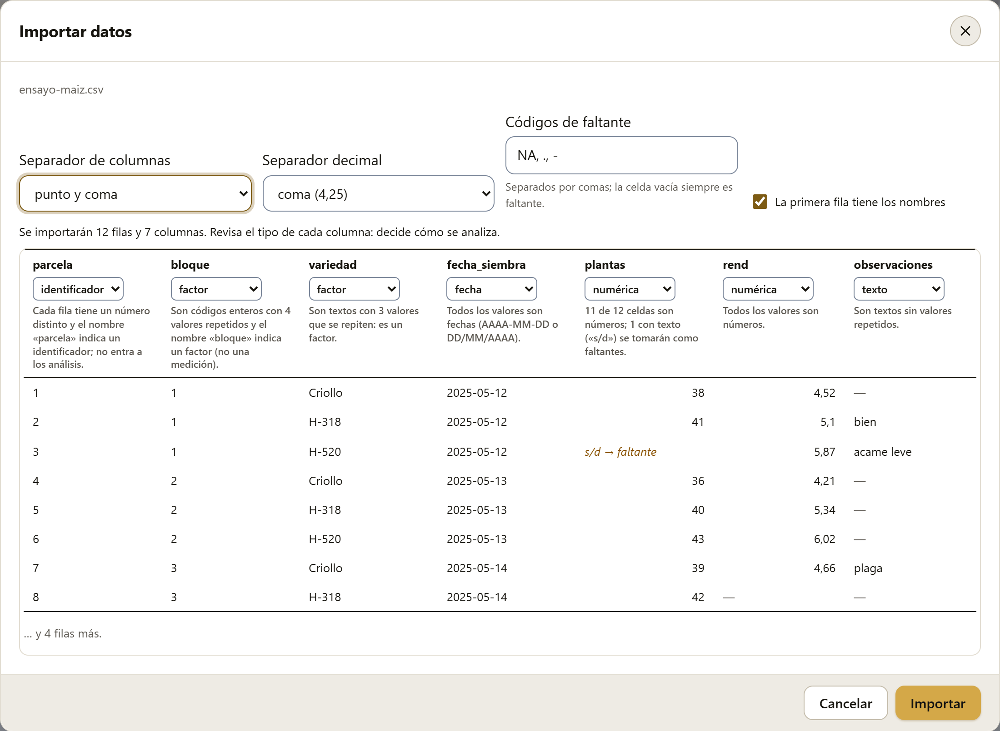
| Opción | Para qué |
|---|---|
| Separador de columnas | Coma, punto y coma, tabulador o barra vertical (solo en archivos de texto). Si la vista previa muestra todo en una sola columna, el separador no es el correcto. |
| Hoja | En un libro, la hoja que se importa. |
| Separador decimal | Punto (4.25) o coma (4,25). En México lo usual es el punto; los archivos de otros países o de hojas de cálculo configuradas en español de España traen coma. |
| Códigos de faltante | Los textos que significan «sin dato», separados por comas (por omisión NA, ., -). La celda vacía siempre es faltante. |
| La primera fila tiene los nombres | Si se desmarca, las columnas se llaman V1, V2… y la primera fila se toma como datos. |
| Tipo de cada columna | El selector arriba de cada columna. Lo que se elija aquí manda; la app solo propone (sección 2.7). |
La vista previa muestra las primeras ocho filas como quedarán: los números con el decimal elegido, las fechas en la forma AAAA-MM-DD y, en otro color, cada celda que no se pueda convertir y se volverá faltante (s/d → faltante). Al pulsar Importar, la tabla se carga y el bloque pasa a la hoja de trabajo. Si alguna columna numérica tenía textos sueltos, un aviso lo dice, y la explicación de esa variable cuenta cuántos fueron.
SigmaPro trabaja con una copia en memoria. Ningún cambio del bloque (tipos, columnas nuevas, filtros, celdas editadas) se escribe en el archivo que se importó. Para guardar la tabla con sus cambios se usa el proyecto .labg (sección 7.5), que trae además los datos en CSV.
Pegar tabla… abre un cuadro de texto donde se pega, con Ctrl+V, un rango copiado de una hoja de cálculo (con su fila de nombres). Al pulsar Continuar aparece la misma ventana de importar de la sección anterior, con el tabulador como separador. Es la forma más rápida de pasar unos datos sin guardar antes un archivo. También se puede pegar directo sobre la rejilla vacía: la app lo reconoce como una tabla nueva y abre la misma ventana.
Hoja vacía… pide los nombres de las columnas, separados por comas (por omisión bloque, tratamiento, rend), y el número de filas (hasta 100 000). Las columnas cuyo nombre indica un factor del diseño (bloque, tratamiento, variedad, repetición, lote…) nacen como factores; las demás, como numéricas. Luego se escribe en la rejilla como en cualquier hoja de cálculo (sección 2.6).
Ejemplos ▾ despliega la lista de los ensayos de ejemplo, con una línea que dice para qué sirve cada uno. Seis son datos publicados (Mendel, Box y Cox, Yates, Cornell y dos de un paquete de R para ensayos multiambiente); los demás son ficticios, construidos para que cada análisis tenga un caso claro. Todos los resultados de este manual salen de ellos, así que cualquier número se puede repetir con un clic.
| Ejemplo | Filas | Diseño y variables | Para |
|---|---|---|---|
| Maíz: híbridos × nitrógeno | 48 | Factorial 3 × 4 en 4 bloques; rendimiento (t/ha) | ANOVA, comparaciones, polinomios, figuras |
| Frijol: germinación (%) | 20 | 5 tratamientos, 4 cajas de 50 semillas | Arcoseno, modelo binomial |
| Trigo: cuadro latino 5 × 5 | 25 | 5 variedades, hileras y columnas | Cuadro latino |
| Jitomate: altura en invernadero | 18 | 3 sustratos; altura a 15, 30, 45 y 60 días, en forma ancha | Ancha → larga, fechas, faltantes |
| Aguacate: trips por brote | 30 | 5 tratamientos en 6 bloques; conteos con ceros | √(x + 0.5), modelos de conteos |
| Venenos × tratamientos | 48 | Box y Cox (1964): 3 venenos × 4 tratamientos | Transformación de Box-Cox |
| Chícharo: segregación de Mendel | 4 | Mendel (1866): 556 semillas ya contadas | Bondad de ajuste 9:3:3:1 |
| Avena en parcelas divididas | 72 | Yates (1935): 3 variedades × 4 dosis de N, 6 bloques | Parcelas divididas |
| Sorgo: variedades y plantas | 24 | 6 variedades en 4 bloques; plantas cosechadas | ANCOVA |
| Café: rendimiento y sitio | 40 | 40 fincas con 7 variables del sitio | Regresión múltiple, selección de variables |
| Frijol: semilla tratada en cuatro lotes | 16 | Germinación por lote y tratamiento, ya contada | Contingencia, Cochran-Mantel-Haenszel |
| Roya: dos evaluadores | 80 | Severidad 0 a 3 calificada por dos técnicos | Kappa, Bowker |
| Alfa-látice: 24 genotipos | 72 | Olivoto y Lúcio (2020): 3 repeticiones, bloques de 4 | Látice mixto, heredabilidad |
| Avena en 14 ambientes | 420 | Olivoto y Lúcio (2020): 10 genotipos, 3 repeticiones | Multiambiente, estabilidad, AMMI, GGE |
| Maíz: altura en cinco fechas | 80 | 4 dosis en 4 bloques; la misma planta en 5 fechas | Medidas repetidas |
| Guayabo: 20 árboles, cuatro cosechas | 80 | Kilogramos por árbol y cosecha, con 5 perdidos | Repetibilidad |
| Herbicidas: peso seco por dosis | 56 | 7 dosis de 2 herbicidas, 4 repeticiones | Dosis-respuesta (DE50) |
| Tomate: nitrógeno × potasio | 13 | Central compuesto rotable con 5 centros | Superficie de respuesta |
| Aguacate: muestreo en tres huertas | 38 | Árboles al azar de 3 huertas; peso y trips (0/1) | Muestreo estratificado |
| Frijol: días a la germinación | 120 | 3 tratamientos; días hasta germinar, con censura | Kaplan-Meier, log-rank, Cox |
| Estación: lluvia y temperatura | 96 | Valores mensuales de 2017 a 2024 | Series de tiempo, ARIMA |
| Chile: medidas del fruto | 60 | 4 variedades en 3 bloques, 5 frutos por parcela | MANOVA, discriminante |
| Hilo: alargamiento de tres polímeros | 15 | Cornell (2002): simplex-látice {3, 2} con repeticiones | Mezclas (modelos de Scheffé) |
| Fruto: rendimiento, costo y pH | 13 | Central compuesto rotable: nitrógeno × riego, tres respuestas | Superficies, deseabilidad |
| Trigo: riego × variedad | 48 | 3 láminas de riego (parcelas grandes) × 4 variedades, 4 bloques | Parcelas divididas, el asistente |
| Arroz: riego × variedad × nitrógeno | 36 | Parcelas subdivididas en 3 bloques | Parcelas subdivididas |
| Sorgo: siete líneas en bloques incompletos | 21 | 7 bloques de 3 parcelas; cada par de líneas coincide una vez (λ = 1) | Bloques incompletos balanceados |
Con una tabla cargada, el bloque se divide en tres partes: la lista de variables a la izquierda, la rejilla con los datos al centro y, debajo de la lista, el detalle de la variable elegida. La figura 2.3 las señala.
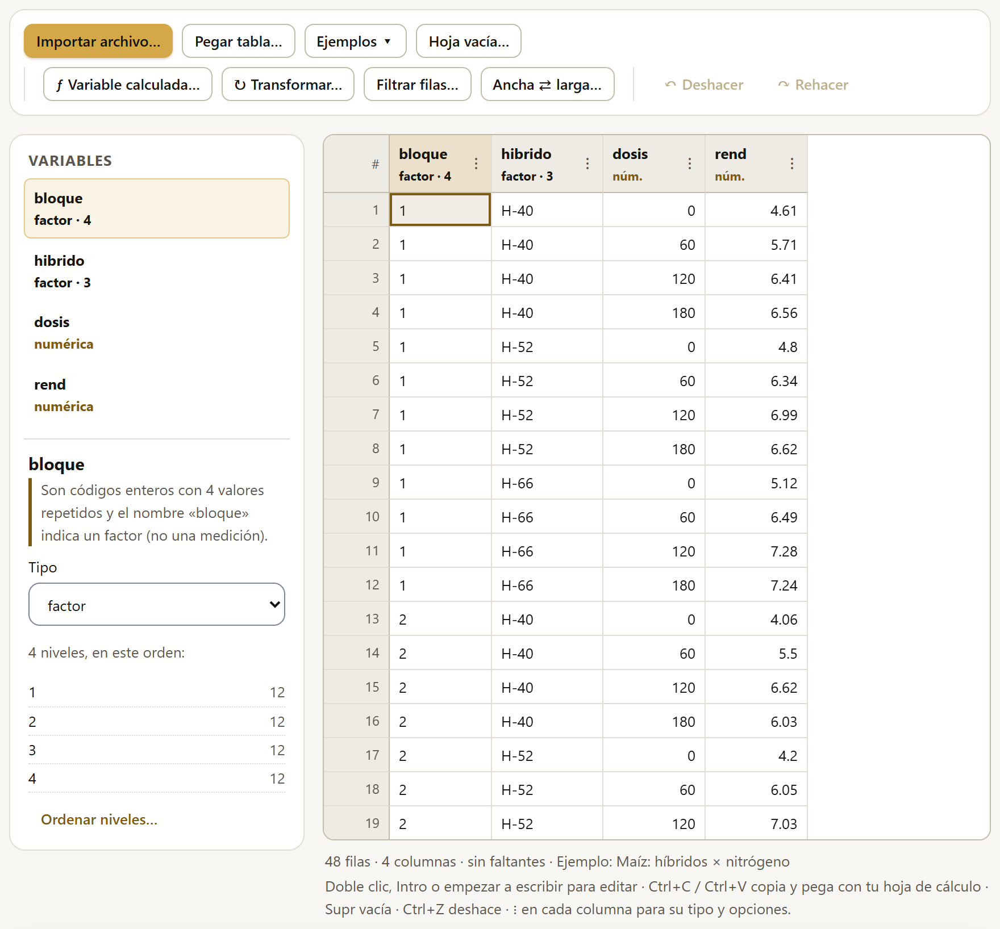
1234567Cada variable de la lista lleva su tipo en color (factor · 4 quiere decir factor con cuatro niveles), las celdas faltantes si las hay (2 falt.) y una marca si es calculada (ƒ) o transformada (↻). Al elegir una, el detalle muestra:
Si hay un filtro activo (sección 2.10), estos resúmenes se calculan solo con las filas que pasan el filtro.
La rejilla funciona como una hoja de cálculo y se maneja con el teclado. Dibuja solo las filas visibles, así que una tabla de 100 000 filas se recorre igual de rápido que una de 100.
| Teclas | Qué hacen |
|---|---|
| Flechas, Inicio, Fin, RePág, AvPág | Moverse por la tabla; Ctrl+Inicio y Ctrl+Fin van a la primera y a la última celda. Con Mayús, se selecciona un rango. |
| Doble clic, Intro, F2 o empezar a escribir | Editar la celda. Intro guarda; Esc cancela. |
| Tab y Mayús+Tab | Celda siguiente y anterior. |
| Supr o Retroceso | Vaciar las celdas seleccionadas (quedan como faltantes). |
| Ctrl+C y Ctrl+V | Copiar y pegar rangos con una hoja de cálculo, separados por tabuladores. |
| Ctrl+Z y Ctrl+Y | Deshacer y rehacer. |
| Ctrl+A | Seleccionar toda la tabla. |
Lo que se escribe en una celda se interpreta según el tipo de la columna: en una numérica, un texto que no es número no se acepta y la app explica por qué (para un dato perdido, la celda se deja vacía); en una fecha, se aceptan AAAA-MM-DD y DD/MM/AAAA. Al pegar un rango, las celdas que no son del tipo de su columna se dejan como estaban y un aviso dice cuántas fueron. Cuando la tabla tiene cambios sin guardar, el navegador pregunta antes de cerrar la pestaña.
El tipo de una columna decide cómo entra a los análisis. Es la decisión más importante del bloque: un bloque escrito con números (1, 2, 3, 4) tomado como numérico convierte un análisis de bloques en una regresión sin sentido.
| Tipo | Qué es | Cómo entra a los análisis |
|---|---|---|
| numérica | Una medición: rendimiento, altura, peso, conteo, porcentaje. También una dosis que se quiera estudiar como curva. | Como respuesta o como covariable. Una dosis numérica con pocos valores repetidos puede usarse además como factor del diseño (el análisis lo ofrece). |
| factor | Un grupo: bloque, tratamiento, variedad, lote, sitio, año del ensayo. | Como factor del diseño; sus niveles tienen un orden que decide el de las medias en cuadros y figuras. |
| fecha | Una fecha (siembra, trasplante, cosecha), en AAAA-MM-DD o DD/MM/AAAA. | Para ordenar series de tiempo y para calcular días entre fechas; nunca como factor del diseño. |
| texto | Notas libres, sin valores repetidos. | No entra, salvo que se use explícitamente; entonces cuenta como factor. |
| identificador | La clave de cada unidad: número de parcela, folio, planta. | No entra a los análisis. Sirve para reconocer cada fila y, en la tabla larga, como sujeto de las medidas repetidas. |
Al importar, SigmaPro propone un tipo para cada columna y explica siempre por qué. Las reglas, en orden:
Si una columna de enteros con pocos valores no tiene un nombre reconocible (por ejemplo T o grupo2), la app la deja como numérica y lo advierte: «Son números, pero solo hay 4 valores distintos repetidos: si son códigos de grupo, cámbiala a factor». Conviene leer la razón de cada variable una vez, al cargar los datos.
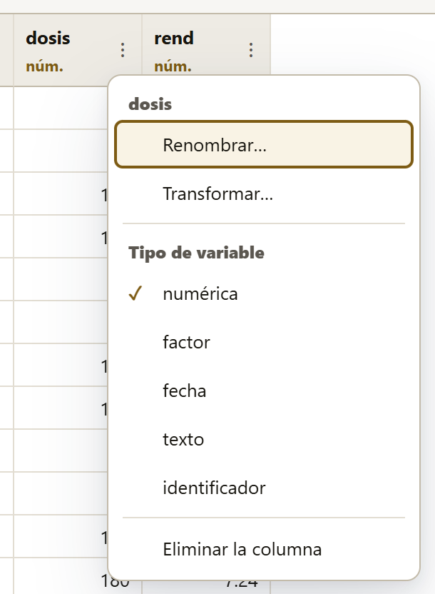
El botón ⋮ junto al nombre de cada columna abre su menú:
Al cambiar a numérica o a fecha, los valores que no se puedan convertir quedan como faltantes y un aviso dice cuántos; el cambio se puede deshacer.
El orden de los niveles decide el de las medias en los cuadros y las figuras, y cuál es el nivel de referencia: el primero, contra el que se comparan los demás en una prueba de Dunnett, en las razones de riesgo de Cox o en los coeficientes de un modelo. Por eso conviene poner primero al testigo.
Los botones Numérico, Alfabético y Como aparecen ordenan de una vez; las flechas ↑ y ↓ mueven un nivel. Aplicar guarda el orden (y se puede deshacer).
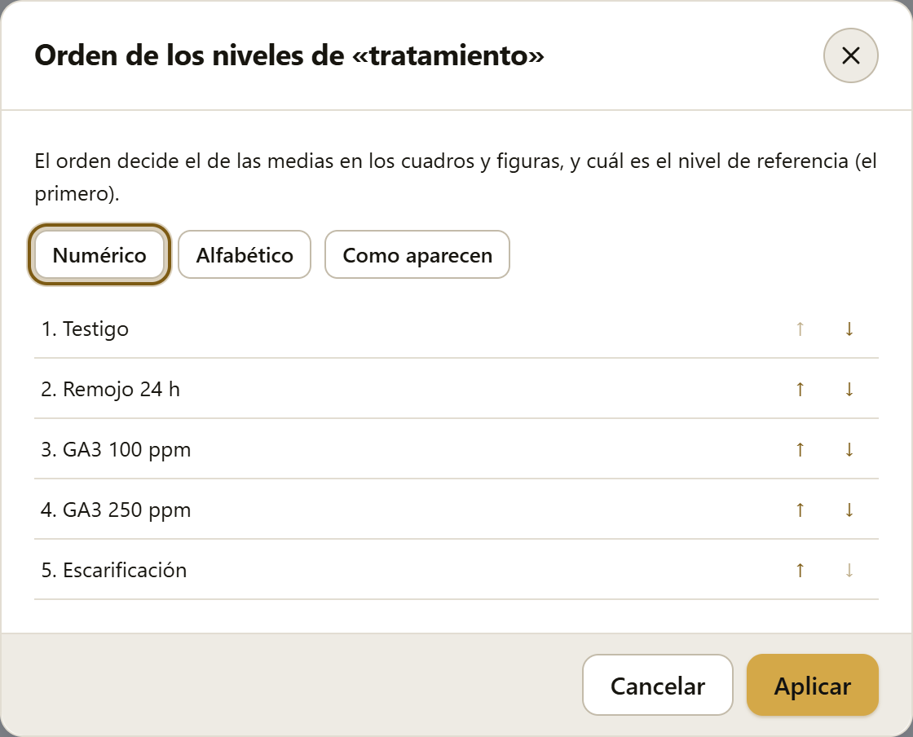
ƒ Variable calculada… crea una columna nueva a partir de las que ya existen, con una expresión escrita en la misma notación de R. Mientras se escribe, la ventana muestra si la expresión es válida, qué tipo de columna dará y sus primeros valores; un clic en el nombre de una columna o de una función la inserta donde está el cursor.
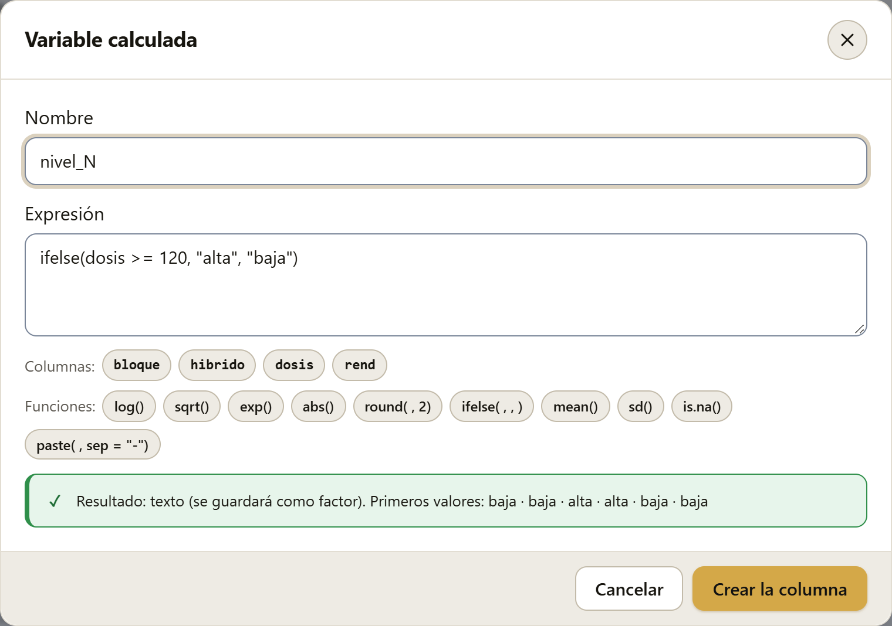
= 120, alta, baja); los botones de columnas y funciones; y la vista previa: texto que se guardará como factor, con los primeros valores baja, baja, alta, alta">| Se escribe | Significa |
|---|---|
+ - * / ^ y %% | Suma, resta, producto, cociente, potencia y resto de la división. |
== != < <= > >= | Comparaciones (dan verdadero o falso). |
& | ! | Y, o, no. |
x %in% c("a", "b") | Pertenencia a una lista. |
`peso seco` | Un nombre con espacios, entre comillas invertidas. |
log(x), log(x, 10), log10, log2, log1p, exp, sqrt, abs | Logaritmos (natural por omisión), exponencial, raíz y valor absoluto. |
round(x, 2), floor, ceiling, trunc, sign | Redondeos y signo. |
sin, cos, tan, asin, acos, atan | Funciones trigonométricas (en radianes). |
pmin(a, b), pmax(a, b) | El menor o el mayor, fila por fila. |
ifelse(cond, sí, no) | Un valor si la condición se cumple y otro si no. |
is.na(x), as.numeric(x) | ¿Falta el dato? · Convertir a número. |
paste(a, b, sep = "-"), paste0 | Unir textos (por ejemplo, para combinar dos factores). |
mean, sd, var, median, min, max, sum, length | Resúmenes de toda la columna: dan un solo número, que se repite en cada fila. |
Algunas funciones tienen también nombre en español: raiz, si (= ifelse), media, de (= sd), mediana, minimo, maximo, suma, varianza, redondear, exponencial, absoluto y faltante (= is.na).
rend * 1000 / 10.5 | Kilogramos por hectárea de una parcela de 10.5 m² (si rend estuviera en kg/parcela). |
(rend - mean(rend)) / sd(rend) | El rendimiento estandarizado. |
germinadas / sembradas * 100 | Porcentaje de germinación. |
ifelse(trips == 0, "sin", "con") | Presencia o ausencia (queda como factor). |
paste(hibrido, dosis, sep = "_") | Un factor con las 12 combinaciones de híbrido y dosis. |
El resultado se guarda según lo que dé la expresión: un número, como columna numérica; un texto, como factor; un verdadero o falso, como factor con los niveles VERDADERO y FALSO. Los faltantes siguen las reglas de R: cualquier operación con un faltante da faltante, y NA & FALSE es FALSE. Una diferencia con R: los resúmenes (mean, sd…) ignoran los faltantes salvo que se escriba na.rm = FALSE, porque casi siempre es lo que se quiere.
Cuando los residuales de un análisis no tienen varianza constante o no son normales (capítulo 4, los supuestos), una transformación de la respuesta suele resolverlo. ↻ Transformar… crea una columna nueva con la variable transformada; la original no cambia, así que se pueden comparar los dos análisis.
| Transformación | Cuándo conviene |
|---|---|
| ln(x) | Datos positivos cuya desviación estándar crece en proporción a la media (pesos, biomasa, cargas de patógeno). |
| log₁₀(x) | Lo mismo, en base 10 (más fácil de leer en órdenes de magnitud). |
| ln(x + c) | Cuando hay ceros. Se elige la constante c (por omisión 1). |
| √x | Conteos cuya varianza es proporcional a la media (distribución de Poisson). |
| √(x + 0.5) | Conteos con ceros o con valores pequeños (insectos, malezas, lesiones). |
| asin(√p) | Proporciones y porcentajes (germinación, incidencia, mortalidad). La ventana detecta si los datos vienen en porcentaje (0 a 100) y deja elegir el resultado en grados o en radianes. |
| 1/x | Tiempos (días a floración, a germinación) cuya varianza crece mucho con la media. |
| Box-Cox | Cuando no se sabe cuál usar: estima la potencia que mejor estabiliza la varianza y normaliza los residuales. |
| (x − media)/DE | Pasar a unidades de desviación estándar (para comparar variables de escalas distintas). |
La transformación de Box y Cox (1964) es una familia de potencias, xλ, que incluye a las anteriores como casos particulares: λ = 1 deja los datos como están, λ = 0.5 es la raíz, λ = 0 el logaritmo y λ = −1 el recíproco. El valor de λ se estima por máxima verosimilitud con los residuales del modelo del experimento, no con los datos crudos: lo que debe estabilizarse es la variación dentro de los tratamientos, no la diferencia entre ellos.
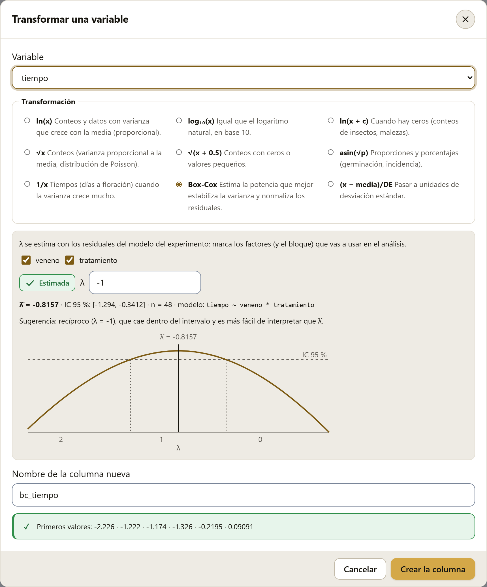
tiempo ~ veneno * tratamiento.Las medias y sus diferencias quedan en la escala transformada. Para presentarlas en las unidades originales se aplica la transformación inversa a las medias (por ejemplo, el cuadrado de las medias de √x), sabiendo que el resultado es una mediana, no una media. Una alternativa que evita el problema son los modelos lineales generalizados (sección 4.17), que modelan los conteos y las proporciones en su propia escala.
Filtrar filas… deja fuera de los análisis las filas que no cumplen una condición, sin borrarlas. Sirve para analizar un solo sitio de un ensayo en varios, quitar un bloque dañado o excluir las parcelas con un problema registrado. La condición se escribe con la notación de la sección 2.8, y la ventana dice al momento cuántas filas pasan.
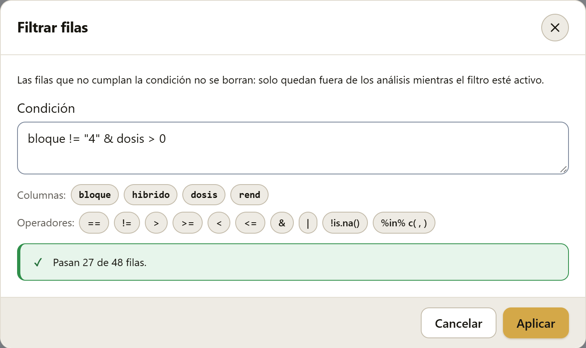
0, los botones de columnas y operadores, y el resultado: pasan 27 de 48 filas">Con el filtro activo, un aviso arriba de la rejilla lo recuerda, con la condición y cuántas filas pasan, y el botón Quitar el filtro. Las filas que no pasan siguen en la rejilla, rayadas y con su número tachado; se pueden ver y corregir.
Todo lo que viene después usa solo las filas que pasan: los resúmenes del detalle, el diagnóstico de la sección 2.13, Explorar, Análisis y el reporte. El proyecto .labg guarda la condición del filtro.
Algunas condiciones útiles:
sitio == "Norte"bloque != "4"!is.na(rend)hibrido %in% c("H-52", "H-66")dosis > 0 & dosis < 180Una fila cuyo resultado sea faltante (por ejemplo, rend > 5 con rend vacío) no pasa. Un filtro que no deja ninguna fila no se aplica.
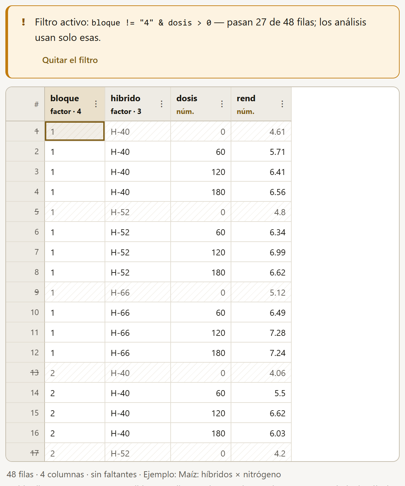
Una variable medida varias veces en la misma unidad suele capturarse en forma ancha: una fila por planta y una columna por fecha (altura_15dds, altura_30dds…). Los análisis piden la forma larga: una fila por medición, con una columna que dice la fecha y otra con el valor. Ancha ⇄ larga… hace el cambio en los dos sentidos.
dds, días después del trasplante) y la columna de valores (altura).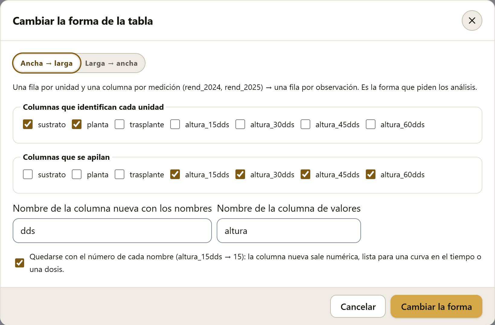
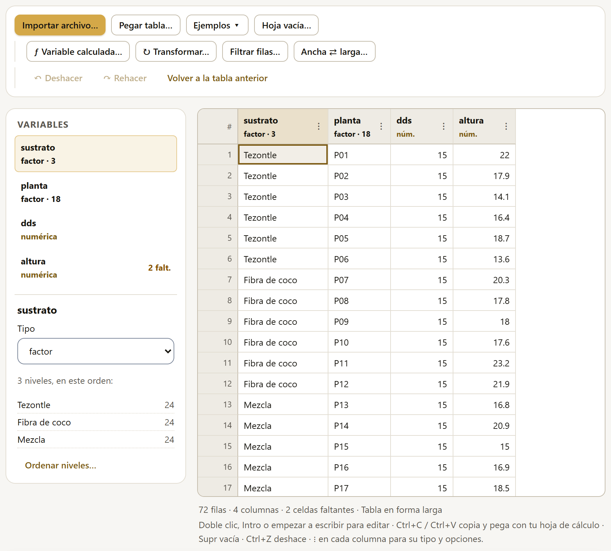
En Larga → ancha se eligen las columnas que identifican cada unidad, la columna cuyos valores darán nombre a las columnas nuevas y la columna con los valores. Si una combinación de identificadores se repite, la app se detiene y lo explica: la tabla ancha no sabría qué valor poner, y hace falta otra columna que distinga esas filas.
Cada cambio de la hoja (una celda, un pegado, un tipo, una columna nueva o eliminada, un orden de niveles) se puede deshacer con ↶ Deshacer o Ctrl+Z, y rehacer con ↷ Rehacer o Ctrl+Y. Al pasar el puntero sobre los botones se lee qué se va a deshacer («Deshacer: Cambiar "dosis" a factor»).
Cambiar la forma de la tabla crea una tabla nueva, y lo mismo hacen los datos de ejemplo que carga «Ver en acción» desde el glosario (sección I.6). Para regresar a la anterior está el botón Volver a la tabla anterior, que aparece en la barra mientras se pueda volver.
Al final del bloque, la tarjeta Lo que SigmaPro ve en tu ensayo resume la estructura que la app reconoce en la tabla. Es la misma lectura que usan el asistente y el constructor de modelos (capítulo 4) para proponer el análisis, y conviene revisarla antes de analizar: si algo no corresponde con el diseño real, es momento de corregir un tipo o una columna.
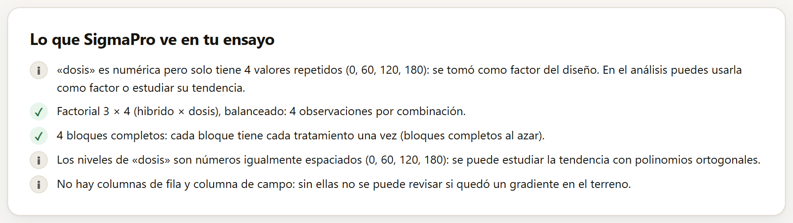
Cada línea lleva un símbolo: ✓ lo que está bien, ! lo que merece atención e i una nota. Lo que se revisa:
| Revisión | Qué puede decir |
|---|---|
| La respuesta | Qué columna se tomó como respuesta y si tiene faltantes (el análisis usará las observaciones completas). |
| Columnas que no son factores | Un identificador (un valor distinto en cada fila), unas submuestras (el número de fruto o de planta dentro de cada parcela, 1, 2, …, que no es un tratamiento) o una numérica con pocos valores repetidos tomada como factor del diseño (una dosis). |
| Combinaciones y balance | Si es un factorial y si cada combinación tiene el mismo número de observaciones. Si no, avisa que las sumas de cuadrados tipo I, II y III darán resultados distintos (sección 4.10); si hay combinaciones vacías, que la tipo III no está definida. |
| Bloques | Si cada bloque tiene todos los tratamientos (bloques completos al azar), cuántos están incompletos y si un tratamiento aparece más de una vez en un bloque. |
| Cuadro latino | Con columnas de fila y columna, si cada tratamiento aparece una vez en cada fila y en cada columna. |
| Dosis | Si los niveles de un factor numérico están igualmente espaciados, que se puede estudiar la tendencia con polinomios ortogonales (sección 4.11). |
| El terreno | Sin columnas de fila y columna de campo no se puede revisar si quedó un gradiente en el terreno. |
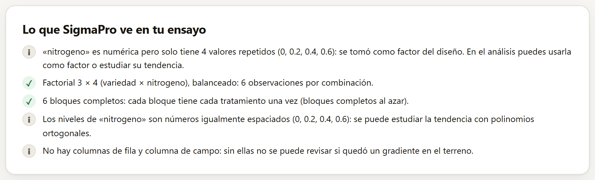
La tarjeta lee la tabla, no el croquis del campo. Un ensayo en parcelas divididas tiene las mismas columnas que un factorial en bloques (figura 2.13): la diferencia está en cómo se aleatorizó, y eso no queda en los datos. Lo mismo pasa con las medidas repetidas sin una columna que diga cuál es la unidad medida. En esos casos el diseño se indica en el asistente, en el catálogo o en el constructor de modelos (capítulo 4); analizar unas parcelas divididas como un factorial en bloques daría pruebas F equivocadas para el factor de la parcela grande.
Si la tabla trae una columna que numera las parcelas grandes (o las franjas), con un nombre como parcela, parcela_grande, pg, subparcela o franja, SigmaPro no la toma como tratamiento y el asistente la usa para reconocer solo las parcelas divididas, subdivididas o en franjas: si un factor no cambia dentro de cada parcela, es el de la parcela grande (sección 4.2). Así viene el ejemplo «Trigo: riego × variedad». La tarjeta de esta sección no lo dice; lo dice el asistente al proponer el análisis.
Debajo de la tarjeta del ensayo puede aparecer la franja Continúa en la suite LABG, con la app hermana que aprovecha la estructura de la tabla. Cada tarjeta dice qué vio en los datos y por qué conviene esa app.
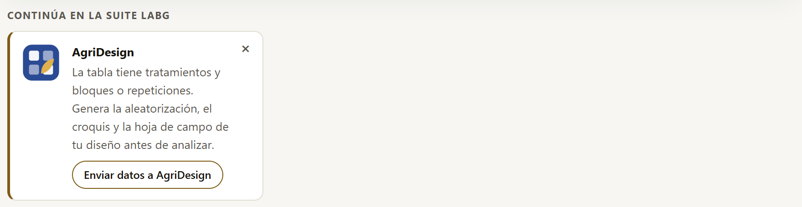
| Si la tabla tiene… | Sugiere |
|---|---|
| tratamientos y bloques o repeticiones | AgriDesign: la aleatorización, el croquis y la hoja de campo del diseño. |
| 8 o más variables numéricas | PCAPro, CorrelationPro y ClusteringPro: reducir dimensiones, ver las relaciones entre muchas variables o formar grupos. |
| columnas de latitud y longitud | BioModellingPro: mapear los sitios, extraer variables de clima y suelo y modelar la distribución de una especie. |
| fechas | PhenologyPro: con fechas y clima diario, grados día, evapotranspiración, etapas fenológicas y riesgo de heladas. |
Enviar datos a … guarda la tabla en un archivo CSV (con el filtro activo, si lo hay) y abre la app en una pestaña nueva; los datos no viajan por internet. El botón ✕ oculta esa sugerencia en este lugar. El capítulo 10 explica todo esto con detalle.